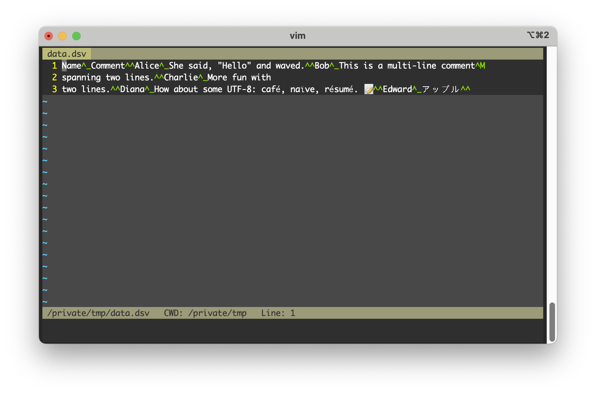
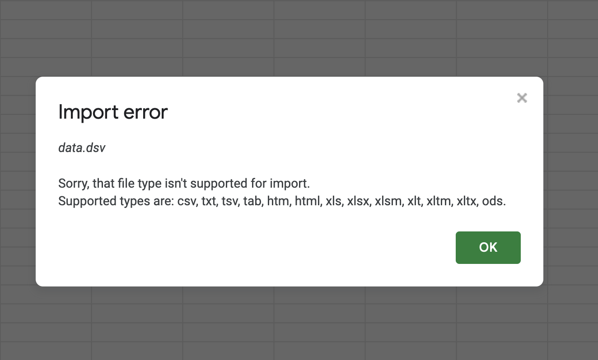
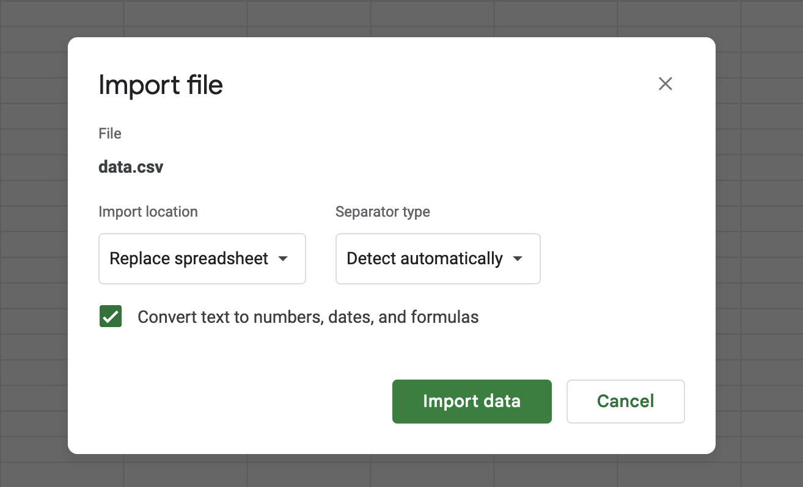
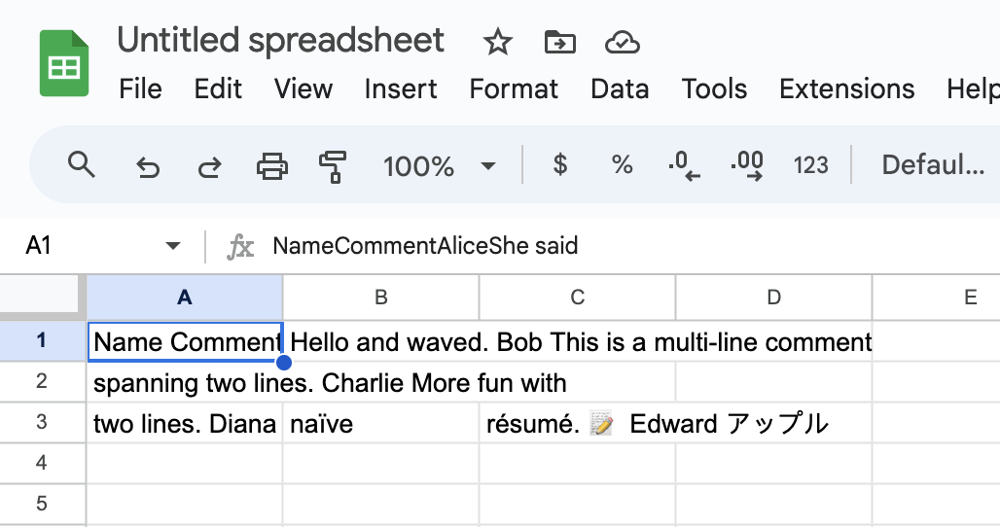
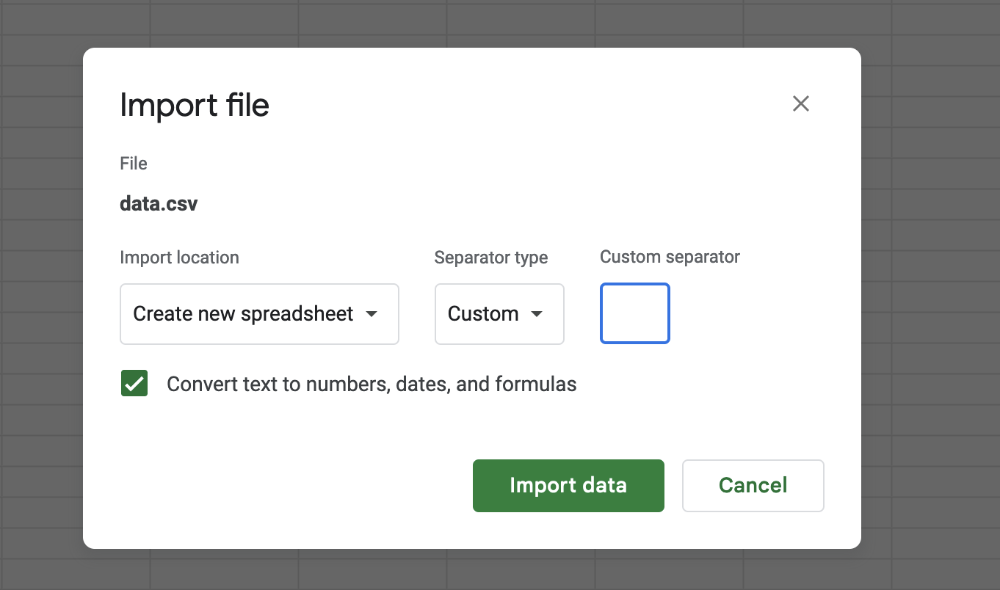

import csv
data = [
['Name', 'Comment'],
['Alice', 'She said, "Hello" and waved.'],
]
with open('/tmp/data.csv', 'w', newline='') as file:
writer = csv.writer(file, quoting=csv.QUOTE_MINIMAL)
writer.writerows(data)CSVs are kinda bad. We know this, but sometimes it’s helpful to remember why they’re kinda bad. Maybe you need to work with CSVs and you’re using Python, because Python is kinda good. And someone else somewhere wrote a CSV:
And you read the CSV:
with open('/tmp/data.csv', 'r') as file:
reader = csv.reader(file, quoting=csv.QUOTE_NONE)
for row in reader:
print(row)['Name', 'Comment']
['Alice', '"She said', ' ""Hello"" and waved."']Oh darn, the data had a " character inside the comment field and it was escaped by doubling it "" which is one way to do that but you didn’t know so your reader is broken.
Or maybe they wrote it this way:
data = [
['Name', 'Comment'],
['Alice', 'She said, "Hello" and waved.'],
]
with open('/tmp/data.csv', 'w', newline='') as file:
writer = csv.writer(file, quoting=csv.QUOTE_NONE, escapechar='\\')
writer.writerows(data)And you read the CSV:
with open('/tmp/data.csv', 'r') as file:
reader = csv.reader(file, quoting=csv.QUOTE_NONE,)
for row in reader:
print(row)['Name', 'Comment']
['Alice', 'She said\\', ' \\"Hello\\" and waved.']Oh darn, you didn’t get the escape character correct so now your’ve got a bunch of malformed data.
Or maybe they wrote this CSV with a | delimiter because people don’t type | very often:
data = [
['Name', 'Score'],
['Alice', '100']
]
with open('/tmp/data.csv', 'w', newline='') as file:
writer = csv.writer(file, delimiter='|')
writer.writerows(data)And you read the CSV:
with open('/tmp/data.csv', 'r') as file:
reader = csv.reader(file, delimiter=',')
for row in reader:
print(row)['Name|Score']
['Alice|100']Oh darn, you didn’t know they were being clever with the delimiter so it didn’t break up the fields at all.
Or maybe you got a CSV from someone who uses a Windows machine and so they tend to use \r\n for newlines:
data = [
['Name', 'Score'],
['Alice', '100']
]
with open('/tmp/data.csv', 'w', newline='\r\n') as file:
writer = csv.writer(file)
writer.writerows(data)And you, on a not-Windows machine, read the CSV:
with open('/tmp/data.csv') as file:
reader = csv.reader(file)
for row in reader:
print(row)['Name', 'Score']
[]
['Alice', '100']
[]Oh darn, you didn’t anticipate that newlines might be different across platforms, so now every other line in your data is blank.
But then maybe you figure that out and you anticipate the \r\n, but then some newlines find their way into the input data:
data = [
['Name', 'Comment'],
['Bob', 'This is a multi-line comment\r\nspanning two lines.']
]
with open('/tmp/data.csv', 'w', newline='\r\n') as file:
writer = csv.writer(file, quoting=csv.QUOTE_NONE, escapechar='\\')
writer.writerows(data)And you read the CSV:
with open('/tmp/data.csv', 'r', newline='\r\n') as file:
reader = csv.reader(file, quoting=csv.QUOTE_NONE, escapechar='\\')
for row in reader:
print(row)['Name', 'Comment']
['Bob', 'This is a multi-line comment\r\r']
['spanning two lines.']Oh darn, you’ve got CR and line breaks and it’s all a mess.
But then maybe you find the Python documentation says there’s this one weird trick to handle newlines:
If
newline=''is not specified, newlines embedded inside quoted fields will not be interpreted correctly, and on platforms that use\r\nlinendings on write an extra\rwill be added. It should always be safe to specifynewline='’, since the csv module does its own (universal) newline handling.
And then you go look up what universal newlines are.
And then you find out that there are different Dialects of CSVs.
And then you learn that Python has a Sniffer that claims it can deduce the CSV format for you.
And then you realize that the data format needs its format deduced and so now you have to become The Joker.
The uninitiated reader might say, “hah, Python is kinda bad!” but actually Python is kinda good! The standard csv module has to handle all these formatting options because CSVs are all one big edge case. And CSVs are all one big edge case because the decision to use commas and tabs and pipes and quotes and newlines to structure the data directly conflict with possible values of the data itself. And so we have to do escaping nonsense and quoting nonsense and line terminator nonsense.
We could skip all of this if we just used a proper delimiter. ASCII has this! Go pop open any ASCII character table and you’ll find these gems:
- 28 (FS) : file separator
- 29 (GS) : group separator
- 30 (RS) : record separator
- 31 (US) : unit separator
And we don’t even need all four of them. If we used 31 as a field delimiter and 30 instead of newlines, we solve every single edge case from above. Why? Because these are non-printing characters that should never appear in a text-stream data set.
Let’s try it out. Writing delimiter-separated values (I made up that name and file extension) data is very easy:
from dataclasses import dataclass
class DSV():
@property
def delimiter(cls) -> bytes:
return b'\x1F'
@property
def record_separator(cls) -> bytes:
return b'\x1E'
@property
def encoding(cls) -> str:
return 'utf-8'
@dataclass
class DSVWriter(DSV):
output_file: str
def write(self, data: list[list]) -> None:
with open(self.output_file, 'wb') as file:
for row in data:
encoded_row = self.delimiter.join(
field.encode(self.encoding) for field in row
)
file.write(encoded_row + self.record_separator)
The reader takes a bit more work to implement, since we need to buffer our input and split on our control characters:
@dataclass
class DSVReader(DSV):
input_file: str
chunk_size : str = 1024
_buffer: bytes = b""
def read(self) -> None:
with open(self.input_file, 'rb') as file:
chunk = file.read(self.chunk_size)
while chunk:
self._buffer += chunk
# Process complete records in the buffer
while self.record_separator in self._buffer:
record, self._buffer = self._buffer.split(
self.record_separator,
1,
)
fields = record.split(self.delimiter)
print([field.decode(self.encoding) for field in fields])
chunk = file.read(self.chunk_size)
# Process any remaining data in the buffer
if self._buffer:
fields = self._buffer.split(self.delimiter)
print([field.decode(self.encoding) for field in fields])And now we can interface by simply writing and reading the data. We don’t have to think about the delimiter because we’ve got a standard, non-conflicting delimiter. We don’t have to think about newlines because we aren’t using those for control characters. We also don’t have to think about quotes because we also aren’t using those for control characters. And we don’t have to think about escaping delimiters or newlines or quotes for all those same reasons.
Writing:
data = [
['Name', 'Comment'],
['Alice', 'She said, "Hello" and waved.'],
['Bob', 'This is a multi-line comment\r\nspanning two lines.'],
['Charlie', 'More fun with\ntwo lines.'],
['Diana', 'How about some UTF-8: café, naïve, résumé. 📝'],
['Edward', 'アップル'],
]
writer = DSVWriter('/tmp/data.dsv')
writer.write(data)And reading:
reader = DSVReader('/tmp/data.dsv')
reader.read()['Name', 'Comment']
['Alice', 'She said, "Hello" and waved.']
['Bob', 'This is a multi-line comment\r\nspanning two lines.']
['Charlie', 'More fun with\ntwo lines.']
['Diana', 'How about some UTF-8: café, naïve, résumé. 📝']
['Edward', 'アップル']🎉 And just like that, we’ve got data going in and out of our writer and reader that has a bunch of weird stuff like quotes and newlines and carriage returns and we don’t need to care! We didn’t have to escape anything because we don’t have any printable characters that would conflict with our control characters.
You might have some different ideas about reader/writer functionality, or character encodings (as long as they’re supersets of ASCII) or why I should be morally scolded for not implementing this in Rust, but the point is you don’t have to think about the fagility of CSVs to go work on those ideas!
💡 Quick aside: I first learned about these ASCII delimiters while working with .fec files. For whatever reason, the Federal Election Commission in the United States also decided that they needed to ditch the comma, but they landed on using ASCII character 28 which is supposed to be used as a file separator not a field saparator. I have no idea why they picked that one when 31 was right there. Anyway, the FEC also has a tool called fs2comma.exe that turns it back into a CSV format, and a couple of years I filed a FOIA request and got the source code.
So what’s the downside? This custom FEC tooling might give you a hint.
For starters, it’s rather unreadable when opened in a text editor. But I bet you don’t really do that with your CSVs all that often anyway!

And Google Sheets hates the .dsv file extension, but remember I made that up.

And if you change it to .csv but tell Google Sheets to “detect automatically” the delimiter, it can’t.


And if you try to specify the delimiter yourself on the Google Sheets import it’s not entirely clear how you would type a non-printable character into the textbox.

And if you want to use Python’s csv module but just swap around the control characters, you can’t because opinions were hardcoded:
Note: The reader is hard-coded to recognise either
'\r'or'\n'as end-of-line, and ignores lineterminator. This behavior may change in the future.
And all this is to say that the major downside is we have decades of tools built around handling the weirdness of CSVs but not so many tools built around using the delimiters the creators of ASCII gave us and so depending on what you’re doing it might be easier to just use the tools we have.
But sometimes you’re writing software that produces data on one side and consumes data on the other side and sometimes that data comes from users who are hostile, intoxicated, or both, and you just want to pass that around and not think about it and maybe the beauty of a standard from the 1960s is a better choice.
Data!